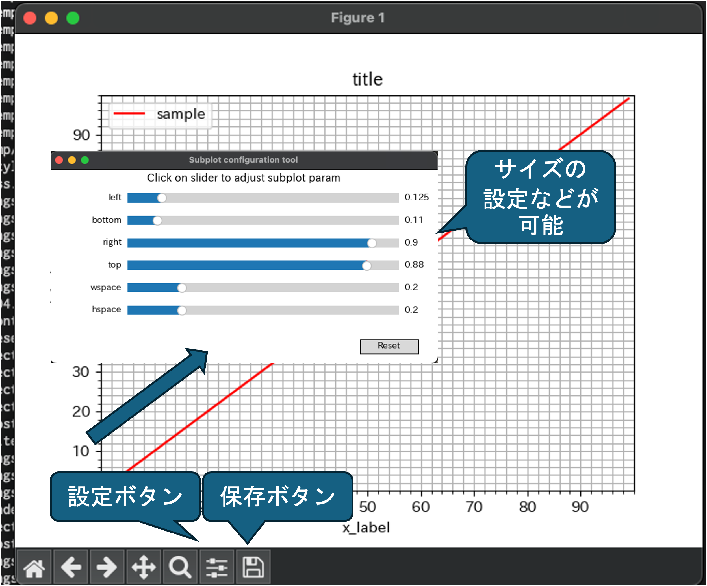
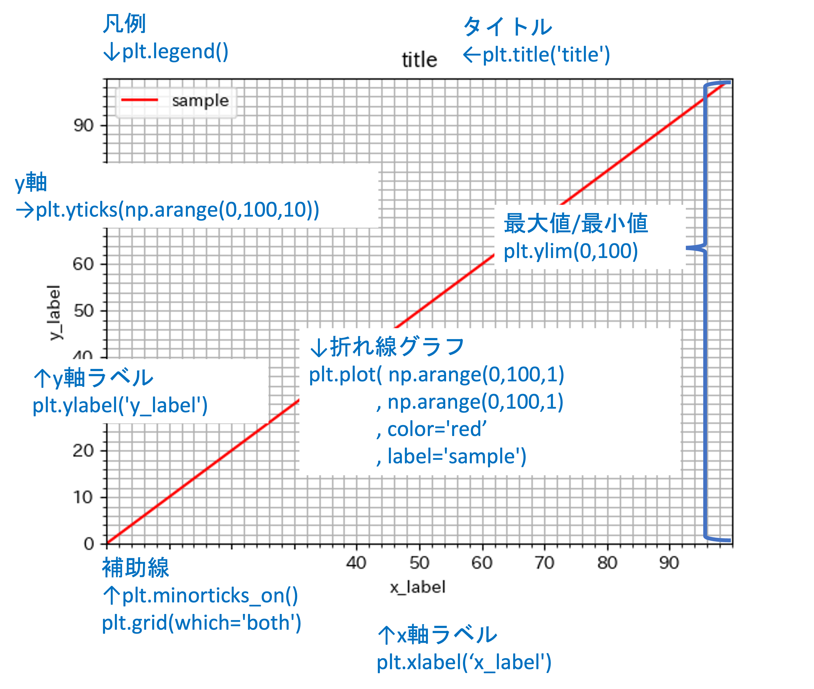
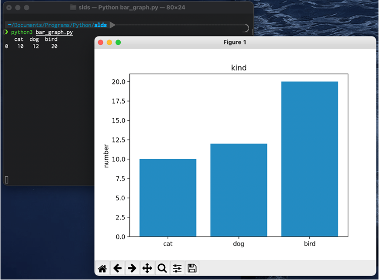
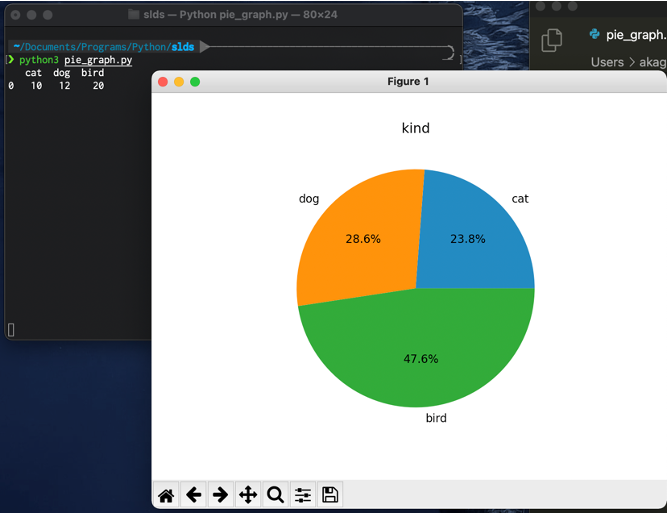
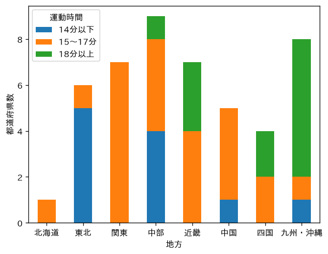
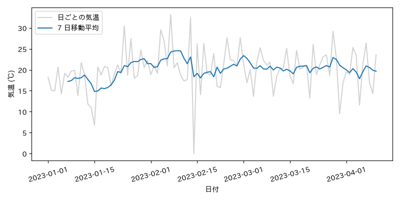

図の選び方と基礎的なグラフ
この回の Exercise DSP3-3 の問 1 では, 発展資料のfor 文を利用したグラフとグラフの分割を参照します.
データの可視化
プログラミングを利用してデータを読み込み, 編集できるようになりました. これから, データを分析する手法を学習しましょう. データ分析の第一歩は, データの可視化です.
統計データはテーブル形式のまま, 眺めても理解できません. データを可視化することで, データの特徴や意味を理解する助けになります. ここでは, データを可視化するいくつかの方法を学びましょう.
ライブラリのインストール
Python におけるグラフ作成の, 代表的なライブラリには, matplotlibやseabornがあります.
それぞれ, uv add しておきましょう.
matplotlib, seaborn はそれぞれ以下のようにインポートするのが一般的です.
import matplotlib.pyplot as pltimport seaborn as sns
matplotlibにおける日本語表示matplotlibは日本語などのマルチバイト文字に対応しておらず, 日本語を使用すると日本語部分が □ (通称豆腐) に変わります.
例: 「Hello こんにちは」 → 「Hello □ □ □ □ □」
matplotlib で日本語を利用する方法として一番簡単なものに, matplotlib-fontja の利用があります.
uv add matplotlib-fontja したあとに, import matplotlib_fontja をしましょう (uv add では '-' (ハイフン) ですが, import 文では '_' (アンダーバー) なので注意してください).
japanize-matplotlibはサポート終了済み
かつて同様の用途で広く使われていた japanize-matplotlib は すでにサポートが終了しています. 既存のコードや解説記事で import japanize_matplotlib という記述を見かけることがありますが, これからは後継である matplotlib-fontja を利用してください.
matplotlib-fontja は japanize-matplotlib のフォークとして開発されており, インポートするだけで日本語フォントが適用される点はそのままで, Python 3.12 以降で発生していた ModuleNotFoundError: No module named 'distutils' の問題も解消されています.
グラフを描くコード例は, 先頭に以下の記述があることを前提とします.
import pandas as pd
import numpy as np
import matplotlib.pyplot as plt
import matplotlib_fontja
import seaborn as snsグラフの選び方:データの次元と種別
グラフを作る前に, まず どのグラフを使うか を決めましょう. 使うべきグラフは, 同時に見る観測項目の数 (データの 次元) と, 各項目が 質的データ か 量的データ かで, おおよそ決まります.
下の樹形図は, 観測項目の数 (データの次元) と各項目の種別を上から順にたどって, 代表的なグラフを選ぶためのものです. 各グラフ名をクリックすると, そのグラフの解説に移動します.
-
データ
-
1次元データ
-
2次元データ
-
3次元以上のデータ
-
ヒストグラムと棒グラフの違い
1 次元データをどちらのグラフで表すかは, 「質的か量的か」だけでは決まりません. 効いてくるのは次の 2 点です.
- 順序があるか: 累積度数・中央値・分布の歪みといった「並び方から読み取る情報」は, カテゴリに順序が無いと意味を持ちません.
- 連続量を階級 (階級幅) に区切ったものか: 面積が度数に比例する, というヒストグラム本来の読み方は, 連続量を区間に分けて初めて成り立ちます.
この 2 点で整理すると, 次のようになります.
- 名義尺度 (血液型・職業など順序の無いカテゴリ) は 棒グラフ で表し, 棒を離して並べます. 並び順は任意で, 棒を入れ替えても中身は変わらないので, 「形」を読んではいけません.
- 順序尺度 (満足度・成績・難易度など順序のあるカテゴリ) は順序があるので累積度数や歪みが読め, 棒を隙間なく詰めて ヒストグラムのように 描いても構いません. ただしカテゴリは離散的で階級幅の概念が無いため, 厳密な意味でのヒストグラムではありません.
- 量的データ (身長・気温など連続した数値) は階級に区切って ヒストグラム で表します. 棒を隙間なく並べ, 階級幅・面積=度数 といった本来の読み方ができます.
構成比を一般向けに伝えたいときは 円グラフ も使えます. 棒を離すか詰めるかは「連続量を階級に区切ったか」で決まり, 質的データでも順序尺度なら詰めて (ヒストグラム風に) 描いてかまいません.
樹形図はデータの形からグラフを選ぶ方法です. グラフを選ぶもう 1 つの手がかりは, 図で何を見せたいか (比較, 構成, 分布, 変化, 関係) です. 見せたいことごとに, 次のグラフが使えます.
- 比較: 棒グラフ
- 構成: 円グラフ, 積み上げ棒グラフ
- 分布: ヒストグラム, 箱ひげ図
- 変化: 折れ線グラフ (複数の系列を重ねる方法は for 文を利用したグラフ)
- 関係: 散布図, 散布図行列, ヒートマップ, 変数の関係を図で表す
同じデータでも, 軸に何を取るかで読み取れることが変わり (縦軸と横軸の選び方), 軸の範囲や色の付け方によっては, グループの間に実際より大きな差があるように見えます (誇張と強調が読み取りに与える影響).
この節に対応する演習は, Exercise DSP3-2です.
基礎的なグラフ (棒グラフ, 円グラフ, 折れ線グラフ)
matplotlib を利用して, グラフを作成する大まかな手順は以下のようになります.
データを準備します. CSV を作りましょう.
pandasで CSV を読み込みます.グラフにしたい部分を抽出します.
グラフを作るために何が必要かはグラフの種類によります.
matplotlibのメソッドを利用してグラフを生成します.基本的なメソッドは以下のとおりです.
グラフの種類 メソッド 棒グラフ plt.bar(x軸のリスト,y軸のリスト)円グラフ plt.pie(カテゴリー別のデータのリスト,labels=ラベルのリスト)折れ線グラフ plt.plot(x軸のリスト,y軸のリスト)散布図 plt.scatter(x軸のリスト,y軸のリスト)これら以外のグラフは, 個別に扱います.
グラフの見た目を整えます.
ある程度自動で設定されますが, 色, 目盛り, 形, 軸などを個別に設定できます.
グラフの要素 メソッド タイトル plt.title('タイトル')凡例 plt.legend()y 軸 plt.yticks(軸の目盛のリスト)x 軸 plt.xticks(軸の目盛のリスト)y 軸ラベル plt.ylabel('ラベル')x 軸ラベル plt.xlabel('ラベル')補助線の追加 plt.minorticks_on()plt.grid(which='both')表示領域 plt.ylim(min,max)plt.xlim(min,max)plt.show()でグラフを出力します.
ポップアップウィンドウでグラフが表示されます.
- グラフを保存します.
ポップアップウィンドウの保存ボタンを押すと, 画像に名前をつけて保存できます.

例えば, 以下のコードで次のグラフが表示されます.
np.arange(0,100,1) は, 0 から 99 まで 1 ずつ増える数値の numpy の配列を生成します.
[x for x in range(0,100,1)] でも同様の結果となります.
plt.plot(np.arange(0,100,1)
,np.arange(0,100,1)
,color='red'
,label='sample')
plt.title('title')
plt.ylim(0,100)
plt.xlim(0,100)
plt.xticks(np.arange(0,100,10))
plt.yticks(np.arange(0,100,10))
plt.minorticks_on()
plt.grid(which='both')
plt.xlabel('x_label')
plt.ylabel('y_label')
plt.legend()
plt.show()
画像は plt.show() で表示されるポップアップウィンドウを立ち上げなくても, plt.savefig('figure.png') と記述することで保存できます.
ただし, plt.show() をして自分でポップアップウィンドウを閉じないと, plt. による設定がメモリに残ったままになります.
plt.show() を実行しない場合は, 必ず最後に plt.close() を追加してメモリを解放しましょう.
plt.plot(np.arange(0,100,1)
,np.arange(0,100,1)
,color='red'
,label='sample')
plt.savefig('figure.png')
plt.close()棒グラフの作成
こちらからデータをダウンロードし, 棒グラフを作成してみましょう.
まずはデータを確認します.
# import 部分は省略されています
# dataフォルダにあるbar_pie.csvというファイルを読み込みます.
df = pd.read_csv("data/bar_pie.csv")
# 読み込んだファイルの中身を見てみます.
print(df)
"""
cat dog bird
0 10 12 20
"""プログラムは読み込むデータと, 作りたいグラフの形によって変化します. どのようなデータが必要かを意識して, データを抽出しましょう.
棒グラフの作成に必要なデータは,
棒毎のラベル
それぞれの棒の名前です. 文字列で指定します.
今回は 'cat', 'dog', 'bird' とします.
棒毎のx軸の位置
棒グラフの位置は, 0 から始まる整数の列として指定します.
今回は, 0, 1, 2 を指定します.
棒毎の高さになります.
高さに 10, 12, 20 を指定します.
# 棒グラフのラベルを抽出します
# df.columns でDataFrameからHeaderを抽出し,
# list()関数でDataFrameからlist型に変換しています
labels = list(df.columns)
# 棒グラフのx軸のどこに置くのかを指定しています.
# np.arange(x) は [0,1,..,x]というarrayを作ります.
x_position = np.arange(len(labels))
#棒グラフの高さを抽出します
# メソッド iloc[x]はDataFrameのx行目を抽出します.
values = list(df.iloc[0])抽出した情報を元に, 棒グラフを作成します.
plt.bar(X軸のリスト,Y軸のリスト) の形で, データを指定します.
# 棒グラフを作成します.
# x 軸 にx_position
# それぞれの棒グラフの高さにvaluesを与えています.
# その他にも沢山の引数があります.
plt.bar(x=x_position, height=values)このままだと, X 軸のラベルに何も記述されないので,
plt.xticks(ラベルの位置のリスト,ラベルのリスト) で, ラベルを指定します.
#ラベルの位置を指定します.
plt.xticks(ticks=x_position,labels=labels)
# Y軸ラベルを指定します
plt.ylabel("number")
# タイトルを指名します
plt.title("kind")
# グラフの表示
plt.show()
表示されたグラフは, 保存ボタンで画像として保存できます.
グラフ作成の基本は, これで終わりです. あとは, それぞれのグラフごとに plt.bar() の部分を使い分け, グラフのデザインを変更することで, 様々なグラフが作成できます. 色, スタイル, 凡例などの変更は, グラフのデザインの変更にまとめてあります.
この節に対応する演習は, Exercise DSP3-4です.
円グラフ
棒グラフの例と同じデータ bar_pie.csv を利用して円グラフを作成してみます.
"""
header1 header2 header3 ...
value1 value2 value3 ...
の形のcsvから棒グラフを作成する
"""
# dataフォルダにあるbar_pie.csvというファイルを読み込みます.
df = pd.read_csv("data/bar_pie.csv")
# 読み込んだファイルの中身を見てみます.
print(df)
# 棒グラフのラベルを抽出します
# df.columns でDataFrameからHeaderを抽出し,
# list()関数でDataFrameからlist型に変換しています
labels = list(df.columns)
# メソッド iloc[x]はDataFrameのx行目を抽出します.
values = list(df.iloc[0])
# 円グラフの作成
plt.pie(values, labels=labels, autopct='%1.1f%%')
# タイトルを指名します
plt.title("kind")
# グラフの表示
plt.show()円グラフは, plt.pie() にそれぞれの領域の割合と, ラベルを与えることで, 作成できます.
グラフに数字を表示するには, autopct= に フォーマット文字列 で表示内容を指定します.
上記の例では '%1.1f%%' と書くことで, 小数点 1 桁まで数値を表示しています.

この節に対応する演習は, Exercise DSP3-4です.
積み上げ棒グラフ
円グラフは 1 つの全体の内訳を表します. 複数のグループの内訳を並べて比べるときは, 棒を内訳ごとに色分けして積み上げた積み上げ棒グラフを使います. 棒全体の高さがグループの合計を, 色ごとの長さが内訳を表します.
積み上げ棒グラフの例には, 都道府県別のデータ (こちら) を使います. e-Stat の都道府県データから 2006 年の値を集めたもので, 列は次のとおりです. このデータは散布図行列, 縦軸と横軸の選び方, 誇張と強調が読み取りに与える影響でも使います.
| 列 | 内容 |
|---|---|
pref |
都道府県名 |
height |
高校 2 年生男子の平均身長 (cm) |
weight |
高校 2 年生男子の平均体重 (kg) |
food |
二人以上の世帯のうち勤労者世帯の食料費 (円) |
sleep |
10 歳以上男性の睡眠の平均時間 (分) |
sports |
15 歳以上男性のスポーツの平均時間 (運動時間, 分) |
あわせて, 都道府県を 8 つの地方 (北海道, 東北, 関東, 中部, 近畿, 中国, 四国, 九州・沖縄) に分けた表 (こちら) も使います. 三重県は近畿に含めています.
地方ごとに, 運動時間が短い県, 中くらいの県, 長い県がいくつずつあるかを積み上げ棒グラフで表します.
df = pd.read_csv('data/pref_stats.csv', encoding='utf-8-sig')
region = pd.read_csv('data/pref_region.csv', encoding='utf-8-sig')
# pref 列が一致する行同士をつないで, 地方の列を加えます.
df = df.merge(region, on='pref')
# 運動時間を 3 つの階級に分けます. (0, 14], (14, 17], (17, 60] の区間になります.
df['sports_class'] = pd.cut(df['sports']
,bins=[0, 14, 17, 60]
,labels=['14分以下', '15〜17分', '18分以上'])
# 地方ごと, 階級ごとに都道府県の数を数えます.
order = ['北海道', '東北', '関東', '中部', '近畿', '中国', '四国', '九州・沖縄']
table = pd.crosstab(df['region'], df['sports_class']).reindex(order)
print(table)
# stacked=True で, 列ごとの棒を積み上げます.
table.plot.bar(stacked=True, rot=0)
plt.xlabel('地方')
plt.ylabel('都道府県数')
plt.legend(title='運動時間')
plt.show()sports_class 14分以下 15〜17分 18分以上
region
北海道 0 1 0
東北 5 1 0
関東 0 7 0
中部 4 4 1
近畿 0 4 3
中国 1 4 0
四国 0 2 2
九州・沖縄 1 1 6pd.cut() は量的データを bins= で指定した区間に分け, 各値がどの階級に入るかを表す列を作ります. pd.crosstab(行, 列) は, 2 つの列の値の組み合わせごとに行数を数えた表を作ります (同時度数分布表で詳しく扱います). できた表の .plot.bar(stacked=True) を呼ぶと, 列 (階級) ごとの棒が行 (地方) ごとに積み上がります. plt.bar() で描く場合は, 2 つ目以降の棒の引数 bottom= に, それまでに積んだ高さを渡します.

東北は 6 県のうち 5 県が 14 分以下, 九州・沖縄は 8 県のうち 6 県が 18 分以上で, 関東は 7 都県すべてが 15〜17 分に入ります. 運動時間の短い県は北に, 長い県は南に多いことが読み取れます. 一方で, 棒全体の高さは地方の都道府県数 (北海道の 1 から中部の 9 まで) で決まるので, 地方同士で内訳の割合を比べるには向きません. 割合で比べる描き方は実数か割合かで扱います.
折れ線グラフ
折れ線グラフは, 時間の順に並んだ値の変化を見せる図です. 横軸に時間をとり, 隣り合う時点の値を線でつなぎます. 線の傾きから, 値が増えているか減っているか, どのくらいの速さで変わっているかを読み取ります.
ある地点の 2023 年 1 月 1 日から 4 月 10 日までの日ごとの気温のデータ (temperature_10location.csv) を使います. Date 列が日付, Location_1 から Location_10 の列が 10 か所の地点の気温です. ここでは Location_1 の 1 か所だけを描きます.
df = pd.read_csv('data/temperature_10location.csv')
# 'Date' 列を日付型に変換します. 横軸が日付の間隔どおりに並びます.
df['Date'] = pd.to_datetime(df['Date'])
# 月ごとの平均気温
print(df.groupby(df['Date'].dt.month)['Location_1'].mean().round(2))
plt.figure(figsize=(8, 4))
plt.plot(df['Date'], df['Location_1'], color='lightgray', label='日ごとの気温')
# rolling(7).mean() で, その日までの 7 日間の平均 (移動平均) を求めます.
plt.plot(df['Date'], df['Location_1'].rolling(7).mean(), color='tab:blue', label='7 日移動平均')
plt.xlabel('日付')
plt.ylabel('気温 (℃)')
plt.legend()
plt.xticks(rotation=15) # 日付の目盛りを 15 度傾けます
plt.show()Date
1 18.74
2 21.44
3 20.23
4 20.13
Name: Location_1, dtype: float64
灰色の線が日ごとの気温です. 日ごとの気温は 0 ℃ から 33 ℃ の間で大きく上下していて, この線だけでは全体の傾向が読み取れません. 青い線は, その日までの 7 日間の気温の平均 (移動平均) です. 移動平均では日ごとの上下がならされ, 1 月中旬に最も低く (約 15 ℃), 2 月上旬に最も高く (約 25 ℃) なり, その後は 20 ℃ 前後で推移していることが読み取れます. 月ごとの平均気温 (1 月 18.74 ℃, 2 月 21.44 ℃) の違いとも合っています.
折れ線グラフは, 横軸が時間のように順序と間隔を持つときに使います. 都道府県や商品の種類のように順序の無いカテゴリーを線でつなぐと, 存在しない「変化」を描くことになるので, 棒グラフを使います. 複数の地点の気温を 1 つの図に重ねる方法は, for 文を利用したグラフで扱います.
この節に対応する演習は, Exercise DSP3-3とExercise DSP3-4です.
演習
Exercise DSP3-4
提出ファイル dsp3-4.py
棒グラフ・円グラフ・折れ線グラフを作る
円グラフ用のデータ, 折れ線グラフ用のデータ, 棒グラフ用のデータを使い, それぞれのグラフを作成してください. 図を読むために必要だと思う表示 (タイトル, 軸のラベル, 数値の表示など) を設定してください.
提出ファイル名: dsp3-4.py
回答例
import pandas as pd
import matplotlib.pyplot as plt
import matplotlib_fontja
# 円グラフ: 内訳の割合を読むので, 割合を表示します.
pie = pd.read_csv('data/pie_chart_practice.csv')
plt.pie(pie['Values'], labels=pie['Category'], autopct='%1.1f%%')
plt.title('カテゴリ別の割合')
plt.show()
# 折れ線グラフ: 月の順に並んだ値の変化を読みます.
line = pd.read_csv('data/line_chart_practice.csv')
plt.plot(line['Month'], line['Value'], marker='o')
plt.xlabel('月')
plt.ylabel('値')
plt.title('月ごとの値の推移')
plt.xticks(rotation=15)
plt.show()
# 棒グラフ: 項目の大小を比べるので, 棒の上に値を表示します.
bar = pd.read_csv('data/bar_chart_practice.csv')
bars = plt.bar(bar['Item'], bar['Value'])
plt.bar_label(bars)
plt.xlabel('項目')
plt.ylabel('値')
plt.title('項目別の値')
plt.show()円グラフは A から D の割合が 30%, 40%, 20%, 10% で, B が最も大きく D が最も小さいことが読み取れます. 折れ線グラフは 1 月の 100 から 6 月の 350 まで, 毎月 50 ずつ一定の割合で増えています. 棒グラフは Item2 と Item4 が 35 で最も大きく, Item1 が 20 で最も小さいことが分かります. 円グラフには割合, 棒グラフには値を直接表示すると, 目盛りを読み取らなくても大小を比べられます.